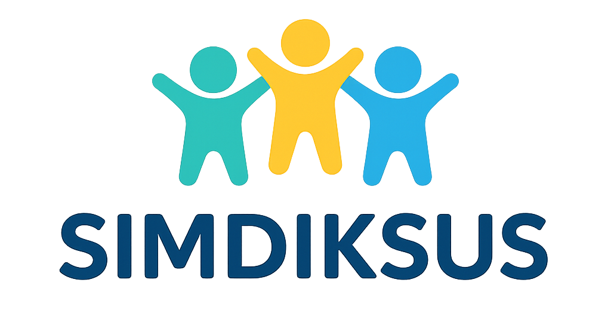

Sistem Informasi dan Identifikasi ABK
Identifikasi
Identifikasi Awal
Identifikasi Lanjutan
Artikel
Hambatan Intelektual Ringan
Gangguan Belajar Spesifik
Gangguan Bicara dan Bahasa
Gangguan Emosional dan Perilaku
Spektrum Autis
ADHD
Tentang Web
Skrining Lanjutan
Jawablah pertanyaan berikut dengan jujur dan akurat.
Kembali
Selesaikan Identifikasi
Butuh Bantuan?
 Butuh Bantuan?
Butuh Bantuan?